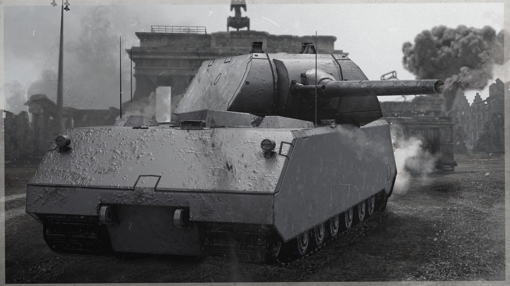

Author: mykhailo kovtok s36474
Heavy Armor transforms you into a walking fortress. Stealth becomes impossible, but survival becomes optional.
Juggernaut increases armor rating. Matching Set rewards fashion. Conditioning removes movement penalties. Reflect Blows occasionally punishes attackers.
Wear heavy armor and get hit repeatedly. Apparently Skyrim's educational system is based on blunt force trauma.
Let mudcrabs attack you while healing. The mudcrab gets exercise and you gain levels. Everybody wins.
Combining Heavy Armor and Restoration creates a training method that would horrify any physician.
If a mudcrab has been hitting you for 30 minutes, rethink your life.
← Back